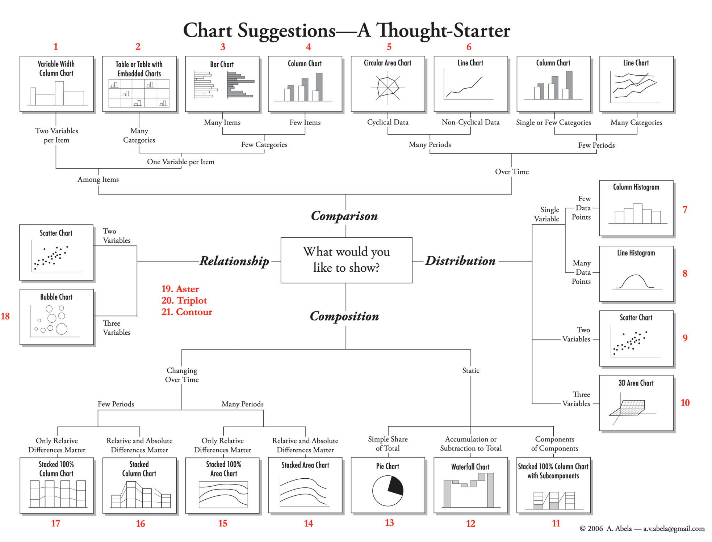
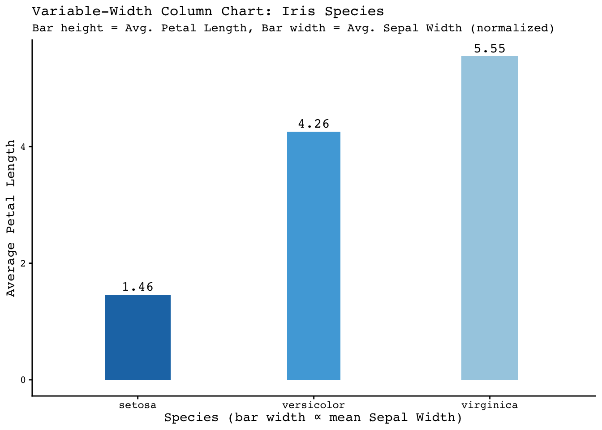
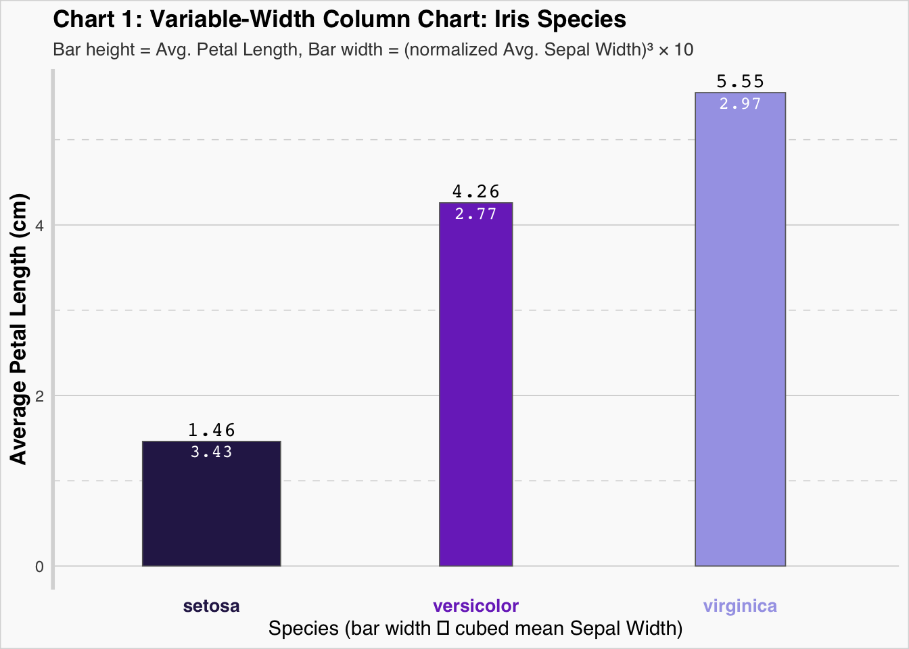
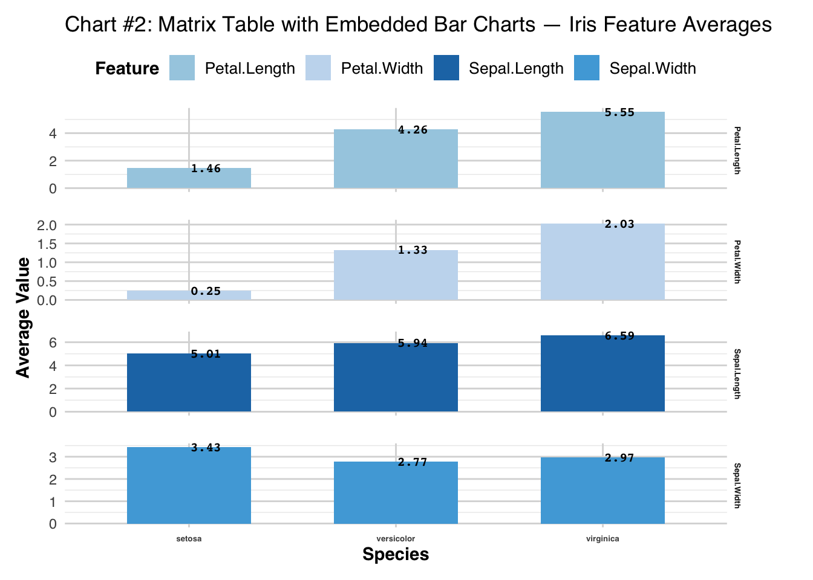
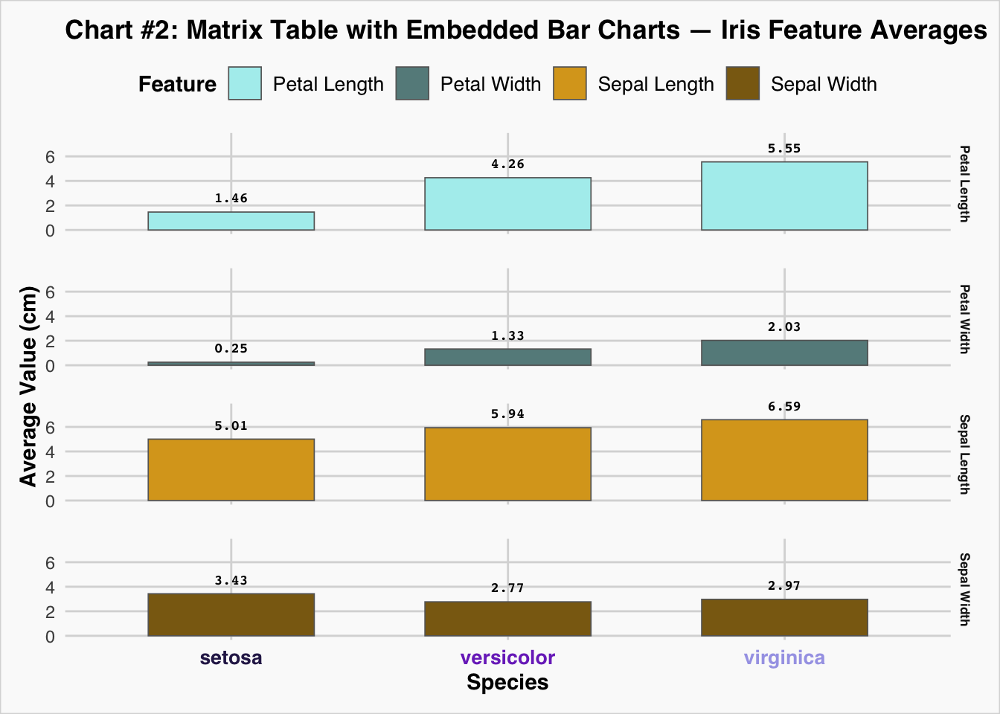
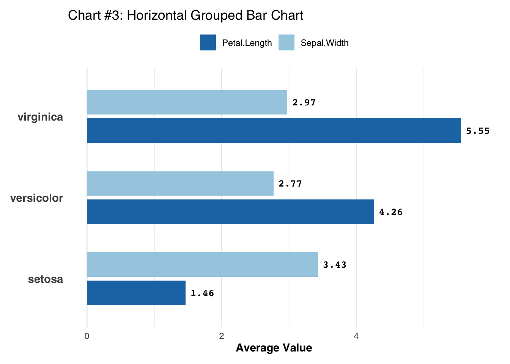
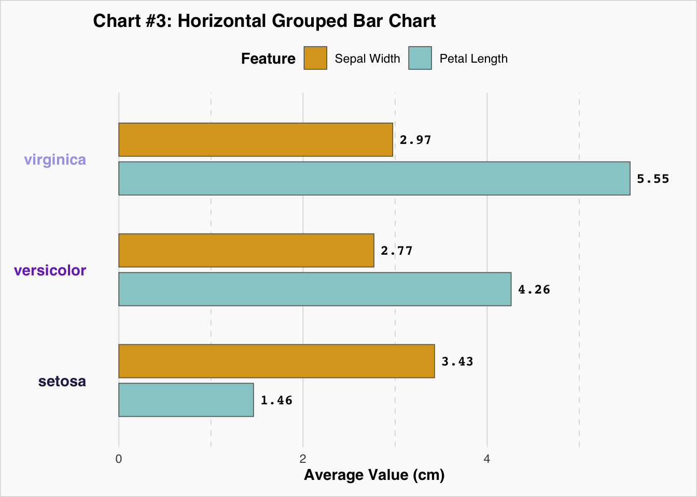
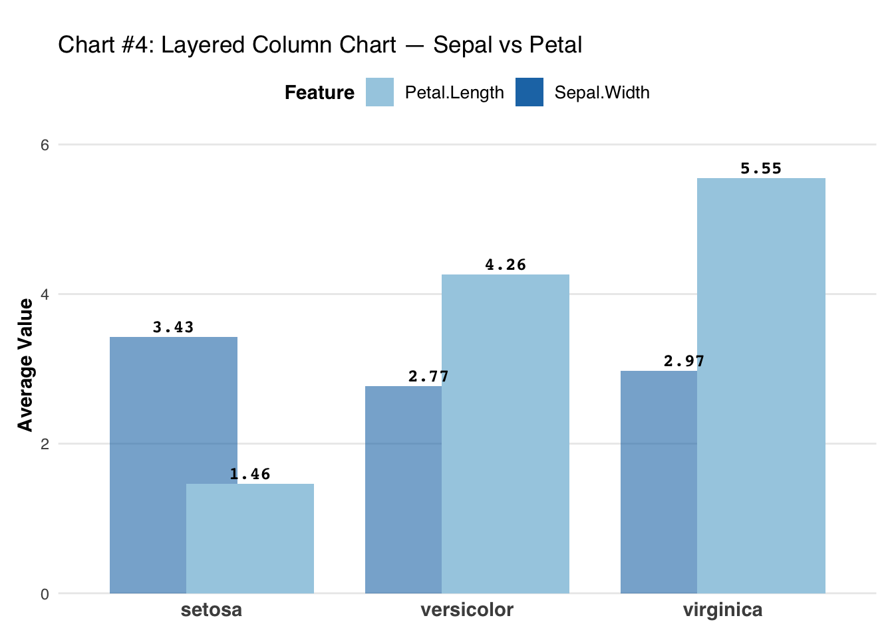
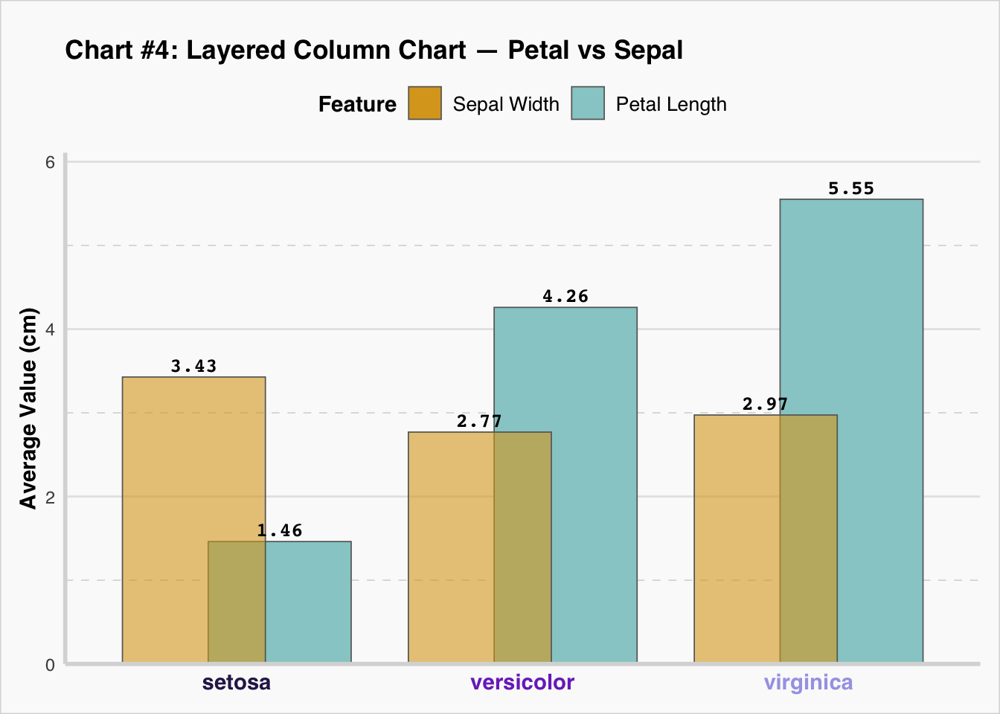

library(ggplot2)
library(dplyr)
Attaching package: 'dplyr'The following objects are masked from 'package:stats':
filter, lagThe following objects are masked from 'package:base':
intersect, setdiff, setequal, unionJohn Glendenning
October 14, 2025
A designer is trained through repetitive practices and creating multiple works on the same object. This assignment follows that method and requests doing charts via a programming approach. Let’s do a hackathon and generate charts in the next 48 hours.
Rules:
Generate a program to create a chart using either R Graphics or ggplot2 or any R packages (no other methods/software are allowed)
AI models are allowed but you need to provide the prompts and detail of AI model (e.g. what model and version).
Codes and products posted on own GitHub website.
Email TA the url of final product within 48 hours (due time at 10 pm, 10/10/2025). Timestamps determine the top three winners. Prizes will be announced in next class. Suggestion: must demonstrate team works instead of individual effort. Members will be randomly selected to answer questions. Pay attention to detail and embellish the chart with design. Coordinator is in charge of delegation and brief synergy report.
Charts for this week: 1-4 in Chart thought starter:

Attaching package: 'dplyr'The following objects are masked from 'package:stats':
filter, lagThe following objects are masked from 'package:base':
intersect, setdiff, setequal, unionlibrary(ggplot2)
data("iris")
iris_summary <- aggregate(cbind(Sepal.Width, Petal.Length) ~ Species, data = iris, FUN = mean)
iris_summary$NormWidth <- iris_summary$Sepal.Width / sum(iris_summary$Sepal.Width)
ggplot(iris_summary, aes(x = Species, y = Petal.Length)) +
geom_col(aes(width = NormWidth, fill = Species)) +
geom_text(aes(label = round(Petal.Length, 2)), vjust = -0.5, size = 4, family = "mono") +
scale_fill_manual(values = c(setosa = "#1f77b4", versicolor = "#4fa9dc", virginica = "#a6cee3")) +
labs(
title = "Variable-Width Column Chart: Iris Species",
subtitle = "Bar height = Avg. Petal Length, Bar width = Avg. Sepal Width (normalized)",
x = "Species (bar width ∝ mean Sepal Width)",
y = "Average Petal Length"
) +
theme_classic(base_family = "mono") +
theme(
legend.position = "none",
plot.title = element_text(size = 12),
plot.subtitle = element_text(size = 10)
)
data("iris")
iris_summary <- aggregate(cbind(Sepal.Width, Petal.Length) ~ Species, data = iris, FUN = mean)
iris_summary <- iris_summary %>%
mutate(NormWidth = (Sepal.Width / sum(Sepal.Width))^3 * 10)
#Color scheme for this graph is selected from photos of the iris types themselves.
ggplot(iris_summary, aes(x = Species, y = Petal.Length)) +
geom_col(aes(width = NormWidth, fill = Species), color = "grey40", linewidth = 0.3) +
geom_text(aes(label = round(Petal.Length, 2)), vjust = -0.5, size = 4, family = "mono") +
geom_text(aes(label = round(Sepal.Width, 2)), vjust = 1.5, size = 3.5, family = "mono", color = "white") +
scale_fill_manual(values = c(
setosa = "#2c2156",
versicolor = "#7b35c4",
virginica = "#a6a4e7"
)) +
labs(
title = "Chart 1: Variable-Width Column Chart: Iris Species",
subtitle = "Bar height = Avg. Petal Length, Bar width = (normalized Avg. Sepal Width)³ × 10",
x = "Species (bar width ∝ cubed mean Sepal Width)",
y = "Average Petal Length (cm)"
) +
theme_minimal(base_family = "sans",paper="grey98") +
theme(
legend.position = "none", panel.grid.major = element_blank(), panel.grid.minor = element_blank(),
plot.title = element_text(face="bold"),
plot.subtitle = element_text(size = 10, color = "grey25"),
axis.title.y = element_text(face="bold",size=12),
axis.text.x = element_text(face = "bold", size = 10, color=c('#2c2156',"#7b35c4","#a6a4e7")),
axis.line.y= element_line(linewidth=1, color="grey85"),
plot.background= element_rect(color="grey85"),
panel.grid.minor.y = element_line(color = "lightgrey", linetype = "dashed", linewidth = 0.25),
panel.grid.major.y = element_line(color = "lightgrey", linetype = "solid", linewidth = 0.3)
)
d <- aggregate(cbind(Sepal.Length, Sepal.Width, Petal.Length, Petal.Width) ~ Species, iris, mean)
d <- reshape(d, list(2:5), v.names = "Value", timevar = "Feature", times = names(d)[2:5], direction = "long")
ggplot(d, aes(x = Species, y = Value, fill = Feature)) +
geom_col(width = 0.6) +
geom_text(aes(label = round(Value, 2)), hjust = -0.05, size = 2.8, family = "mono", fontface = "bold", color = "black") +
facet_grid(Feature ~ ., scales = "free") +
scale_fill_manual(values = c(Sepal.Length = "#1f77b4", Sepal.Width = "#4fa9dc", Petal.Length = "#a6cee3", Petal.Width = "#c6dbef")) +
labs(title = "Chart #2: Matrix Table with Embedded Bar Charts — Iris Feature Averages", x = "Species", y = "Average Value", fill = "Feature") +
coord_cartesian(clip = "off") +
theme_minimal(base_family = "sans") +
theme(strip.text = element_text(face = "bold", size = 5),
axis.text.x = element_text(face = "bold", size = 5),
axis.title.x = element_text(face = "bold"),
axis.title.y = element_text(face = "bold"),
panel.grid.major = element_line(color = "gray85"),
panel.spacing.y = unit(1.2, "lines"),
plot.margin = margin(10, 40, 10, 10),
legend.position = "top",
legend.title = element_text(face = "bold"),
legend.text = element_text(size = 10))
library(ggplot2)
#labs(title = "Chart #2: Matrix Table with Embedded Bar Charts — Iris Feature Averages", x = "Species", y = "Average Value (cm)", fill = "Feature")
d <- reshape(aggregate(cbind(Sepal.Length, Sepal.Width, Petal.Length, Petal.Width) ~ Species, iris, mean),
list(2:5), v.names = "Value", timevar = "Feature", times = names(iris)[1:4], direction = "long")
f_labels <- c("Petal.Length" = "Petal Length","Petal.Width"="Petal Width","Sepal.Length"="Sepal Length","Sepal.Width"="Sepal Width")
ggplot(d, aes(Species, Value, fill = Feature)) +
geom_col(width = 0.6, color="grey40", linewidth=0.3) +
geom_text(aes(label = round(Value, 2)), vjust = -1.2, size = 2.5, family = "mono", fontface = "bold", color = "black") +
coord_cartesian(clip="off")+
facet_grid(Feature ~ ., labeller= as_labeller(f_labels)) +
scale_y_continuous(expand = expansion(mult = c(0.05, 0.2))) +
scale_fill_manual(values = c(Sepal.Length = "goldenrod", Sepal.Width = "goldenrod4", Petal.Length = "paleturquoise", Petal.Width = "paleturquoise4"),labels=c("Sepal.Length"="Sepal Length","Sepal.Width" = "Sepal Width", "Petal.Length" = "Petal Length","Petal.Width"="Petal Width")) +
labs(title = "Chart #2: Matrix Table with Embedded Bar Charts — Iris Feature Averages", x = "Species", y = "Average Value (cm)", fill = "Feature") +
theme_minimal(base_family = "sans",paper="grey98") +
theme(strip.text = element_text(face = "bold", size = 6.5), axis.text.x = element_text(face = "bold", size = 10, color=c('#2c2156',"#7b35c4","#a6a4e7")),
plot.title = element_text(face="bold"),
axis.title.x = element_text(face = "bold"), axis.title.y = element_text(face = "bold"),
panel.grid.major = element_line(color = "grey85"), panel.grid.minor = element_blank(),
panel.spacing.y = unit(1.2, "lines"), plot.margin = margin(10, 10, 10, 10),
legend.position = "top", legend.title = element_text(face = "bold"), legend.text = element_text(size = 10),
plot.background= element_rect(color="grey85"))
library(ggplot2)
data("iris")
d <- aggregate(cbind(Sepal.Width, Petal.Length) ~ Species, iris, mean)
d_long <- reshape(d, varying = list(names(d)[2:3]), v.names = "Value",
timevar = "Variable", times = names(d)[2:3], direction = "long")
ggplot(d_long, aes(x = Value, y = Species, fill = Variable)) +
geom_col(position = position_dodge(0.7), width = 0.6) +
geom_text(aes(label = round(Value, 2)), position = position_dodge(0.7),
hjust = -0.2, size = 3.5, family = "mono", fontface = "bold", color = "black") +
scale_fill_manual(values = c(Sepal.Width = "#a6cee3", Petal.Length = "#1f77b4")) +
labs(title = "Chart #3: Horizontal Grouped Bar Chart", x = "Average Value", y = NULL) +
coord_cartesian(clip = "off") +
theme_minimal(base_family = "sans") +
theme(axis.text.y = element_text(face = "bold", size = 11),
axis.title.x = element_text(face = "bold"),
legend.title = element_blank(),
legend.position = "top",
plot.margin = margin(10, 30, 10, 10),
panel.grid.major.y = element_blank())
library(ggplot2)
data("iris")
d <- aggregate(cbind(Sepal.Width, Petal.Length) ~ Species, iris, mean)
d_long <- reshape(d, varying = list(names(d)[2:3]), v.names = "Value",
timevar = "Variable", times = names(d)[2:3], direction = "long")
ggplot(d_long, aes(x = Value, y = Species, fill = Variable)) +
geom_col(position = position_dodge(0.7), width = 0.6, color="grey40", linewidth=0.3) +
geom_text(aes(label = round(Value, 2)), position = position_dodge(0.7),
hjust = -0.2, size = 3.5, family = "mono", fontface = "bold", color = "black") +
scale_fill_manual(values = c(Sepal.Width = "goldenrod", Petal.Length = "paleturquoise3"), labels = c("Sepal.Width" = "Sepal Width", "Petal.Length" = "Petal Length")) +
labs(title = "Chart #3: Horizontal Grouped Bar Chart", x = "Average Value (cm)", y = NULL, fill="Feature") +
coord_cartesian(clip = "off") +
guides(fill= guide_legend(reverse=T))+
theme_minimal(base_family = "sans",paper="grey98") +
theme(axis.text.y = element_text(face = "bold", size = 11, color=c('#2c2156',"#7b35c4","#a6a4e7")),
axis.title.x = element_text(face = "bold"),
plot.title = element_text(face="bold"),
legend.title = element_text(face = "bold"),
legend.position = "top",
plot.margin = margin(10, 30, 10, 10),
panel.grid.major.y = element_blank(),
panel.grid.minor.x = element_line(color = "lightgrey", linetype = "dashed", linewidth = 0.25),
plot.background= element_rect(color="grey85"))
library(ggplot2); data("iris")
d <- aggregate(cbind(Sepal.Width, Petal.Length) ~ Species, iris, mean)
d <- reshape(d, list(2:3), v.names = "Value", timevar = "Variable",
times = names(d)[2:3], direction = "long")
d$Layer <- d$Variable
ggplot(d, aes(x = Species, y = Value, fill = Layer)) +
geom_col(position = position_nudge(x = ifelse(d$Layer == "Sepal.Width", -0.15, 0.15)),
width = 0.5, alpha = ifelse(d$Layer == "Sepal.Width", 0.6, 1)) +
geom_text(aes(label = round(Value, 2)),
position = position_nudge(x = ifelse(d$Layer == "Sepal.Width", -0.15, 0.15)),
vjust = -0.5, size = 3.5, family = "mono", fontface = "bold", color = "black") +
scale_fill_manual(values = c(Sepal.Width = "#1f77b4", Petal.Length = "#a6cee3")) +
scale_y_continuous(expand = expansion(mult = c(0, 0.1))) +
coord_cartesian(clip = "off") +
labs(title = "Chart #4: Layered Column Chart — Sepal vs Petal", x = NULL, y = "Average Value", fill = "Feature") +
theme_minimal(base_family = "sans") +
theme(axis.text.x = element_text(face = "bold", size = 11),
axis.title.y = element_text(face = "bold"),
panel.grid.major.x = element_blank(),
panel.grid.minor = element_blank(),
legend.position = "top",
legend.title = element_text(face = "bold"),
legend.text = element_text(size = 10),
plot.margin = margin(t = 20, r = 10, b = 10, l = 10))
library(ggplot2); data("iris")
d <- aggregate(cbind(Petal.Length, Sepal.Width) ~ Species, iris, mean)
d <- reshape(d, list(2:3), v.names = "Value", timevar = "Variable",
times = names(d)[2:3], direction = "long")
d$Layer <- d$Variable
ggplot(d, aes(x = Species, y = Value, fill = Layer)) +
geom_col(position = position_nudge(x = ifelse(d$Layer == "Sepal.Width", -0.15, 0.15)),
width = 0.5, alpha = ifelse(d$Layer == "Sepal.Width", 0.6, 1), color="grey40",linewidth=0.3) +
geom_text(aes(label = round(Value, 2)),
position = position_nudge(x = ifelse(d$Layer == "Sepal.Width", -0.15, 0.15)),
vjust = -0.5, size = 3.5, family = "mono", fontface = "bold", color = "black") +
scale_fill_manual(values = c(Petal.Length = "#96CDCD", Sepal.Width = "#DAA520"), labels = c("Petal.Length" = "Petal Length","Sepal.Width" = "Sepal Width")) +
scale_y_continuous(expand = expansion(mult = c(0, 0.1))) +
coord_cartesian(clip = "off") +
guides(fill= guide_legend(reverse=T))+
labs(title = "Chart #4: Layered Column Chart — Petal vs Sepal", x = NULL, y = "Average Value (cm)", fill = "Feature") +
theme_minimal(base_family = "sans",paper="grey98") +
theme(axis.text.x = element_text(face = "bold", size = 11, color=c('#2c2156',"#7b35c4","#a6a4e7")),
axis.title.y = element_text(face = "bold"),
plot.title = element_text(face="bold"),
panel.grid.major.x = element_blank(),
panel.grid.minor = element_blank(),
panel.grid.minor.y = element_line(color = "lightgrey", linetype = "dashed", linewidth = 0.25),
legend.position = "top",
legend.title = element_text(face = "bold"),
legend.text = element_text(size = 10),
plot.margin = margin(t = 20, r = 10, b = 10, l = 10),
axis.line= element_line(linewidth=1, color="grey85"),
plot.background= element_rect(color="grey85"))
Certain elements of this preparation were enhanced with an LLM including but not limited to code restructuring, commenting, and information layout.